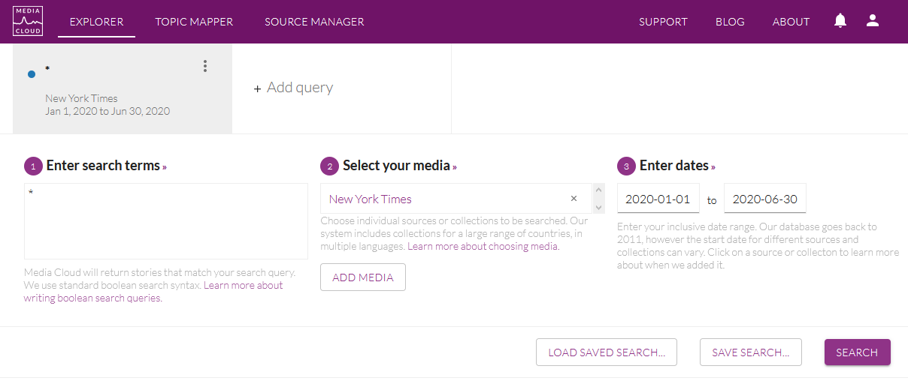
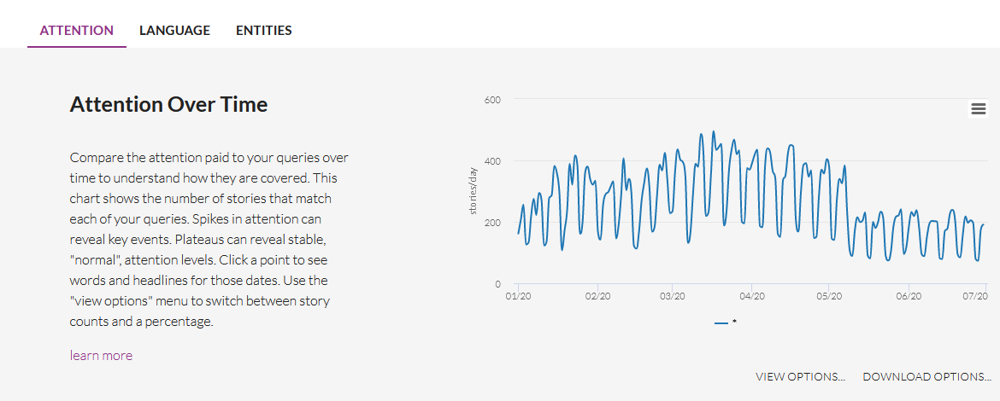
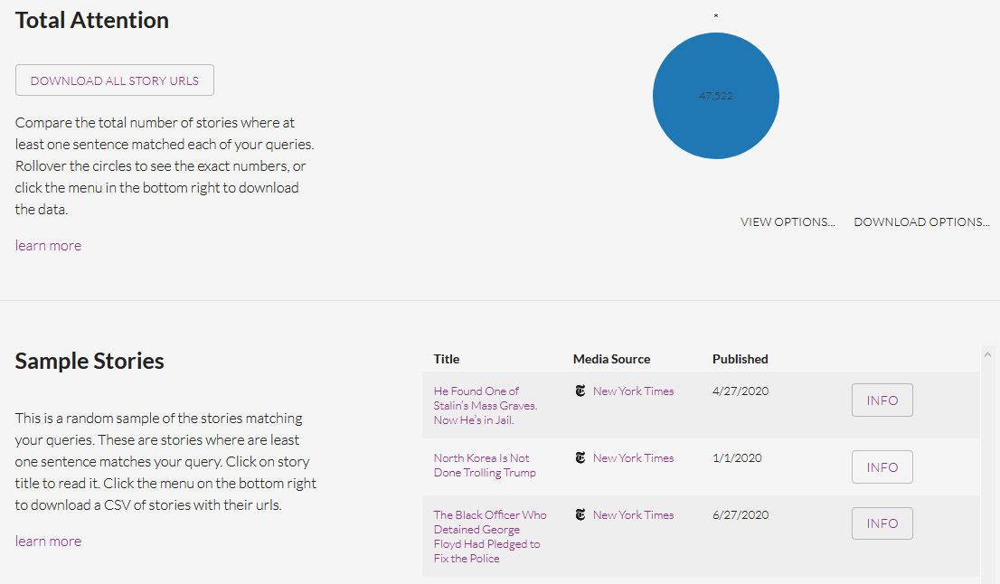

Chapter 3 Data collection
We can have different use of data, depending on the amount of text available. Basically, we will distingush between three cases corresponding to three levels of information :
- title of news : typically, the case of data downloaded on mediacloud
- title of news + description : typically the case of data obtained by webscrapping of RSS flows and parsing of the XML code.
- **full text of *news** : typically the data obtained through a private provider of newspapers (Factiva, EuroPresse, LexisNexis …) of by (non legal) scrapping of text through the URL’s.
3.1 DATA LEVEL 1 : Title of news
3.1.1 Download titles with mediacloud interface
We suppose that you want to analyze the title of the news collected by the New York Times during the first semester of 2020. You can easily proceed to such a collection with the application Mediacloud.
https://explorer.mediacloud.org
You need firstly to register (for free) in order to create an account. Then you can select your media, select your period and select all stories by using the request ’*’ as in the example presented below.

Below your request, you obtain a graphic entitled Attention Over Time with the distribution of the number of news published per day which help you to verify if the distribution of news is regular through time. In our example, you an notice a classical week cycle (with decrease of the number of news publish during the week-end). But you can also observe a discontinuity at the beginning of May 2020 with a decline to a lower level of production of news.
 Going down, you will find a news panel entitled Total Attention which gives you the total number of stories found. In our example, we have a total of 47522 stories produced by the NYT during the first semester of 2020.

Finally, by clicking on the button Download all story URLS, you can get a .csv file that you can easily load in your favorite porgramming language. In the case of R, you can load it with a program like this.
df<-read.csv(file = "_data/mc/en_USA_nytime_20200101_20200630.csv",
sep=",",
header=T,
encoding = "UTF-8",
stringsAsFactors = F)
str(df)## 'data.frame': 30265 obs. of 10 variables:
## $ stories_id : int 1483747633 1483747632 1483779604 1483817555 1483817553 1483858519 1483858517 1483858514 1483858512 1483858499 ...
## $ publish_date : chr "2020-01-01 00:00:08" "2020-01-01 00:05:07" "2020-01-01 01:00:05" "2020-01-01 03:00:11" ...
## $ title : chr "Meteor Showers in 2020 That Will Light Up Night Skies" "Rocket Launches, Trips to Mars and More 2020 Space and Astronomy Events" "What’s on TV Wednesday: A Linda Ronstadt Doc and ‘Doctor Who’" "Why Did the U.S. Become the Focus of Iraqis’ Anger?" ...
## $ url : chr "https://www.nytimes.com/2020/01/01/science/meteor-showers-2020.html" "https://www.nytimes.com/2020/01/01/science/space-astronomy-2020.html" "https://www.nytimes.com/2020/01/01/arts/television/whats-on-tv-wednesday-a-linda-ronstadt-doc-and-doctor-who.html" "https://www.nytimes.com/2020/01/01/world/middleeast/iraq-embassy-iran.html" ...
## $ language : chr "en" "en" "en" "en" ...
## $ ap_syndicated: chr "False" "False" "False" "False" ...
## $ themes : chr "" "" "" "" ...
## $ media_id : int 1 1 1 1 1 1 1 1 1 1 ...
## $ media_name : chr "New York Times" "New York Times" "New York Times" "New York Times" ...
## $ media_url : chr "http://nytimes.com" "http://nytimes.com" "http://nytimes.com" "http://nytimes.com" ...N.B. We can notice, without being able to explain this fact, that the number of stories downloaded (30265), which is less than what was announced by the mediacloud interface (47522). May be it is related to the elimination of duplicates ?
3.1.2 Transformation and storage in quanteda format.
Currently, the size of the file (unzipped) is equal to 7.3 Mb. But we can observe that a lot of information are the same for all news and should not necessarily be kept. We can also exclude the url field if we are not interested in. We propose therefore to use a better form of storage based on quanteda format.
# Create Quanteda corpus
qd<-corpus(df$title)
# Add date
qd$date<-df$publish_date
# Add initial meta
meta(qd,"language")<-df$language[1]
meta(qd,"media_id")<-df$media_id[1]
meta(qd,"media_name")<-df$media_name[1]
meta(qd,"media_url")<-df$media_url[1]
# Add supplementary meta
meta(qd,"media_country")<-"USA"
meta(qd,"data_source")<-"Media Cloud "
meta(qd,"data_time")<-"Download the 2020-07-06"
meta(qd,"data_author")<-"Elaborated by Claude Grasland"We have created a quanteda object with a lot of information stored in various fields. The structure of the object is the following one
## 'corpus' Named chr [1:30265] "Meteor Showers in 2020 That Will Light Up Night Skies" ...
## - attr(*, "names")= chr [1:30265] "text1" "text2" "text3" "text4" ...
## - attr(*, "docvars")='data.frame': 30265 obs. of 4 variables:
## ..$ docname_: chr [1:30265] "text1" "text2" "text3" "text4" ...
## ..$ docid_ : Factor w/ 30265 levels "text1","text2",..: 1 2 3 4 5 6 7 8 9 10 ...
## ..$ segid_ : int [1:30265] 1 1 1 1 1 1 1 1 1 1 ...
## ..$ date : chr [1:30265] "2020-01-01 00:00:08" "2020-01-01 00:05:07" "2020-01-01 01:00:05" "2020-01-01 03:00:11" ...
## - attr(*, "meta")=List of 3
## ..$ system:List of 5
## .. ..$ package-version:Classes 'package_version', 'numeric_version' hidden list of 1
## .. .. ..$ : int [1:3] 2 1 0
## .. ..$ r-version :Classes 'R_system_version', 'package_version', 'numeric_version' hidden list of 1
## .. .. ..$ : int [1:3] 4 0 2
## .. ..$ system : Named chr [1:3] "Windows" "x86-64" "CIST"
## .. .. ..- attr(*, "names")= chr [1:3] "sysname" "machine" "user"
## .. ..$ directory : chr "C:/claude/git/newsbook"
## .. ..$ created : Date[1:1], format: "2020-07-09"
## ..$ object:List of 2
## .. ..$ unit : chr "documents"
## .. ..$ summary:List of 2
## .. .. ..$ hash: chr(0)
## .. .. ..$ data: NULL
## ..$ user :List of 8
## .. ..$ language : chr "en"
## .. ..$ media_id : int 1
## .. ..$ media_name : chr "New York Times"
## .. ..$ media_url : chr "http://nytimes.com"
## .. ..$ media_country: chr "USA"
## .. ..$ data_source : chr "Media Cloud "
## .. ..$ data_time : chr "Download the 2020-07-06"
## .. ..$ data_author : chr "Elaborated by Claude Grasland"We can look at the first titles with head()
| x | |
|---|---|
| text1 | Meteor Showers in 2020 That Will Light Up Night Skies |
| text2 | Rocket Launches, Trips to Mars and More 2020 Space and Astronomy Events |
| text3 | What’s on TV Wednesday: A Linda Ronstadt Doc and ‘Doctor Who’ |
We can get meta information on each stories with summary()
## Corpus consisting of 30265 documents, showing 3 documents:
##
## Text Types Tokens Sentences date
## text1 10 10 1 2020-01-01 00:00:08
## text2 12 13 1 2020-01-01 00:05:07
## text3 13 14 1 2020-01-01 01:00:05We can get meta information about the full document
## $language
## [1] "en"
##
## $media_id
## [1] 1
##
## $media_name
## [1] "New York Times"
##
## $media_url
## [1] "http://nytimes.com"
##
## $media_country
## [1] "USA"
##
## $data_source
## [1] "Media Cloud "
##
## $data_time
## [1] "Download the 2020-07-06"
##
## $data_author
## [1] "Elaborated by Claude Grasland"We can finally save the object in RDS format
We have kept all the information present in the initial file, but also added specific metadata of interest for us. The size of the storage is now equal to 1.2Mb which means a division by 6 as compared to the initial .csv file downloaded from Media Cloud.
3.2 DATA LEVEL 2 : Title of news + description
We take the example of The Guardian for which we have obtained a special extraction fo title + description.
## tibble [160,855 x 8] (S3: tbl_df/tbl/data.frame)
## $ stories_id : num [1:160855] 5.15e+08 6.02e+08 6.02e+08 6.02e+08 6.01e+08 ...
## $ title : chr [1:160855] "Steve Bell’s If ... Watson-D2's booby-trap for Jez Bi-Wan Corbyn" "Conservative MP's aide appears in court on rape charges" "'We're taking them home': saving Russia's brick slaves – video" "Saido Berahino: spiked nightclub drink was to blame for my drugs ban" ...
## $ url : chr [1:160855] "https://www.theguardian.com/commentisfree/picture/2016/sep/19/steve-bells-if-watson-d2s-booby-trap-for-jez-bi-wan-corbyn" "https://www.theguardian.com/uk-news/2017/mar/31/conservative-mps-aide-appears-in-court-on-charges" "https://www.theguardian.com/global-development/video/2017/mar/31/were-taking-them-home-saving-russia-brick-slaves-video" "https://www.theguardian.com/football/2017/mar/31/saido-berahino-drugs-ban-from-spiked-nightclub-drink" ...
## $ publish_date: POSIXct[1:160855], format: "2016-09-19 02:15:39" "2017-03-31 05:46:18" ...
## $ media_id : num [1:160855] 300560 300560 300560 300560 300560 ...
## $ media_name : chr [1:160855] "The Guardian UK" "The Guardian UK" "The Guardian UK" "The Guardian UK" ...
## $ media_url : chr [1:160855] "http://www.theguardian.com/uk" "http://www.theguardian.com/uk" "http://www.theguardian.com/uk" "http://www.theguardian.com/uk" ...
## $ description : chr [1:160855] "<a href=\"https://www.theguardian.com/commentisfree/picture/2016/sep/19/steve-bells-if-watson-d2s-booby-trap-fo"| __truncated__ "<p>Sam Armstrong, who has been suspended as Craig Mackinlay’s chief of staff, allegedly raped a woman in the Ho"| __truncated__ "<p>Thousands of Russia’s most vulnerable men and women go missing every year. They are plucked from cities and "| __truncated__ "• Former West Brom striker served eight-week ban for taking recreational drug<br />• Berahino: ‘I still cannot "| __truncated__ ...We can recognize many variables from our first example of download of title from Mediacloud. But with a new field called description that add more or less text, depending of the media under investigation.
3.2.1 Cleaning the html code in description file
We have generally a high risk to find html codes in the description field which are not of prior interest for textual analysis. The problem is clearly present in our example :
## [1] "<a href=\"https://www.theguardian.com/commentisfree/picture/2016/sep/19/steve-bells-if-watson-d2s-booby-trap-for-jez-bi-wan-corbyn\">Continue reading...</a>"
## [2] "<p>Sam Armstrong, who has been suspended as Craig Mackinlay’s chief of staff, allegedly raped a woman in the Houses of Parliament</p><p>A Tory MP’s aide has appeared in court accused of raping a woman in the Houses of Parliament.</p><p>Sam Armstrong, who has been suspended as chief of staff to South Thanet MP Craig Mackinlay, appeared at Westminster magistrates court on Friday charged with two counts of rape and one count of sexual assault by penetration.</p> <a href=\"https://www.theguardian.com/uk-news/2017/mar/31/conservative-mps-aide-appears-in-court-on-charges\">Continue reading...</a>"## [1] "<p>The man who came up with the classic I love NY logo died on Friday at 91, leaving a rich legacy</p><p>It’s a privilege and occasional frustration for graphic designers that they furnish the backgrounds of the lives of millions, without those millions always being aware that they have done so. So it was for Milton Glaser, who died on Friday, on his 91st birthday.</p><p>It is hard to think of any visual artist so pervasive in his influence. If you’re of a certain age, you might have noticed his carnivalesque covers on the Signet Classic <a href=\"https://www.miltonglaser.com/the-work/123/signet-signet-classics/\">paperback series of Shakespeare plays</a>, or have owned the poster he made for Bob Dylan’s <em>Greatest Hits</em>, in which bright riotous hair bursts from the singer’s austere silhouette. With the Push Pin Studios, which he helped found in 1954 with fellow graduates of the Cooper Union design school, he can be said to have created what became the look of the 60s: flowing lines, rainbow colours, strong patterns.</p> <a href=\"https://www.theguardian.com/artanddesign/2020/jun/27/milton-glaser-why-the-new-york-graphic-designer-was-so-influential\">Continue reading...</a>"
## [2] "<p>Texas pauses next phase of reopening; Mexico treasury secretary tests positive for Covid-19; Brazil registers 39,483 new cases; Follow the latest updates</p><ul><li><a href=\"https://www.theguardian.com/world/2020/jun/25/major-incident-declared-as-people-flock-to-england-south-coast\">England: major incident declared as people flock to south coast</a><br /></li><li><a href=\"https://www.theguardian.com/us-news/2020/jun/25/trump-fauci-redfield-cdc-coronavirus-messages\">How Trump and his officials diverge on coronavirus</a><br /></li><li><a href=\"https://www.theguardian.com/world/coronavirus-outbreak\">See all our coronavirus coverage</a></li></ul><p class=\"block-time published-time\"> <time datetime=\"2020-06-25T23:32:30.877Z\">12.32am <span class=\"timezone\">BST</span></time> </p><p>Hello and welcome to today’s live coverage of the coronavirus pandemic. </p><p>I’m <a href=\"https://twitter.com/helenrsullivan\">Helen Sullivan</a> and I’ll be bringing you the latest developments from around the world for the next few hours. You’re welcome to send news and tips from your part of the world, comments, questions or suggestions to me on Twitter <a href=\"https://twitter.com/helenrsullivan\">@helenrsullivan</a> or via email: helen.sullivan@theguardian.com. </p> <a href=\"https://www.theguardian.com/world/live/2020/jun/26/coronavirus-live-news-cases-rise-in-27-us-states-as-cdc-estimates-20m-americans-may-have-been-infected\">Continue reading...</a>"Therefore, we can proceed to an immediate cleaning through a function. One of the most simple one is proposed below, but can be further completed for specific situation
## [1] "Continue reading..."
## [2] "Sam Armstrong, who has been suspended as Craig Mackinlay’s chief of staff, allegedly raped a woman in the Houses of ParliamentA Tory MP’s aide has appeared in court accused of raping a woman in the Houses of Parliament.Sam Armstrong, who has been suspended as chief of staff to South Thanet MP Craig Mackinlay, appeared at Westminster magistrates court on Friday charged with two counts of rape and one count of sexual assault by penetration. Continue reading..."## [1] "The man who came up with the classic I love NY logo died on Friday at 91, leaving a rich legacyIt’s a privilege and occasional frustration for graphic designers that they furnish the backgrounds of the lives of millions, without those millions always being aware that they have done so. So it was for Milton Glaser, who died on Friday, on his 91st birthday.It is hard to think of any visual artist so pervasive in his influence. If you’re of a certain age, you might have noticed his carnivalesque covers on the Signet Classic paperback series of Shakespeare plays, or have owned the poster he made for Bob Dylan’s Greatest Hits, in which bright riotous hair bursts from the singer’s austere silhouette. With the Push Pin Studios, which he helped found in 1954 with fellow graduates of the Cooper Union design school, he can be said to have created what became the look of the 60s: flowing lines, rainbow colours, strong patterns. Continue reading..."
## [2] "Texas pauses next phase of reopening; Mexico treasury secretary tests positive for Covid-19; Brazil registers 39,483 new cases; Follow the latest updatesEngland: major incident declared as people flock to south coastHow Trump and his officials diverge on coronavirusSee all our coronavirus coverage 12.32am BST Hello and welcome to today’s live coverage of the coronavirus pandemic. I’m Helen Sullivan and I’ll be bringing you the latest developments from around the world for the next few hours. You’re welcome to send news and tips from your part of the world, comments, questions or suggestions to me on Twitter @helenrsullivan or via email: helen.sullivan@theguardian.com. Continue reading..."In our example, we can see that the description is related to a number of sentences followed by Continue reading. It can therefore be relevant to eliminate immediately the final part But the cleaning procedure is generally much longer and complex, especially when the corpus cover many years. Indeed, the style of description may have change through time. This point will be discuss in more details in the next chapter.
3.2.2 Transformation of text+description in quanteda corpus
As we have done previously, we will store the result in a quanteda corpus object with associated metadata. But before to do that we have to merge title + description in a same text where title will be the first sentence.
N.B. I am not quite sure of the good separator to be used between title and description
## [1] "Steve Bell’s If ... Watson-D2's booby-trap for Jez Bi-Wan Corbyn.\n.Continue reading..."
## [2] "Conservative MP's aide appears in court on rape charges.\n.Sam Armstrong, who has been suspended as Craig Mackinlay’s chief of staff, allegedly raped a woman in the Houses of ParliamentA Tory MP’s aide has appeared in court accused of raping a woman in the Houses of Parliament.Sam Armstrong, who has been suspended as chief of staff to South Thanet MP Craig Mackinlay, appeared at Westminster magistrates court on Friday charged with two counts of rape and one count of sexual assault by penetration. Continue reading..."## [1] "Milton Glaser graphic designer dies aged 91 i love ny logo.\n.The man who came up with the classic I love NY logo died on Friday at 91, leaving a rich legacyIt’s a privilege and occasional frustration for graphic designers that they furnish the backgrounds of the lives of millions, without those millions always being aware that they have done so. So it was for Milton Glaser, who died on Friday, on his 91st birthday.It is hard to think of any visual artist so pervasive in his influence. If you’re of a certain age, you might have noticed his carnivalesque covers on the Signet Classic paperback series of Shakespeare plays, or have owned the poster he made for Bob Dylan’s Greatest Hits, in which bright riotous hair bursts from the singer’s austere silhouette. With the Push Pin Studios, which he helped found in 1954 with fellow graduates of the Cooper Union design school, he can be said to have created what became the look of the 60s: flowing lines, rainbow colours, strong patterns. Continue reading..."
## [2] "Coronavirus live news: cases rise in 27 US states as CDC estimates 20m Americans may have been infected.\n.Texas pauses next phase of reopening; Mexico treasury secretary tests positive for Covid-19; Brazil registers 39,483 new cases; Follow the latest updatesEngland: major incident declared as people flock to south coastHow Trump and his officials diverge on coronavirusSee all our coronavirus coverage 12.32am BST Hello and welcome to today’s live coverage of the coronavirus pandemic. I’m Helen Sullivan and I’ll be bringing you the latest developments from around the world for the next few hours. You’re welcome to send news and tips from your part of the world, comments, questions or suggestions to me on Twitter @helenrsullivan or via email: helen.sullivan@theguardian.com. Continue reading..."# Create Quanteda corpus
qd<-corpus(df$text)
# Add date
qd$date<-as.POSIXct(strptime(df$publish_date,"%Y-%m-%d %H:%M:%S"))
# Add initial meta
meta(qd,"media_id")<-df$media_id[1]
meta(qd,"media_name")<-df$media_name[1]
meta(qd,"media_url")<-df$media_url[1]
# Add supplementary meta
meta(qd,"language")<-"en"
meta(qd,"media_country")<-"FRA"
meta(qd,"data_source")<-"Media Cloud "
meta(qd,"data_time")<-"Special extraction"
meta(qd,"data_author")<-"Elaborated by Claude Grasland"
# Save in Rdata format
saveRDS(qd,file ="_data/qd/en_GBR_guardi.Rdata")3.3 DATA LEVEL 3 : Full text
We consider finally the case of news based on full text. It is generally related to the selection of a precise corpus related to a specific topic (e.g. migration, border, …) in order to limit the size of the resulting database.
We can take the example of …
To be done.